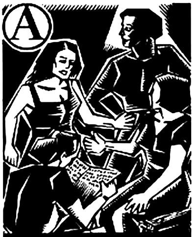

Pembentukan

Apa indikator yang bisa kita gunakan untuk menentukan bahwa kita telah siap untuk membentuk federasi? Apa itu siap? Mungkin anda dapat mengecap saya sebagai seorang yang bersemangat dan terburu-buru. Tapi jika kita pikirkan sekali lagi, karena bentuk dan tujuan organisasi yang hendak kita bentuk berbeda jauh dengan organisasi mahasiswa ekstra-kampus yang lain, tidak banyak hal yang perlu kita pertimbangkan untuk menentukan apa yang kita maksud
dengan siap dan tidak siap itu.
Lagipula, jika kita menunggu semuanya siap, percayalah, maka kita tidak akan pernah bisa membentuk federasi. Satu-satunya indikator yang bisa kita pertimbangkan hanyalah kuantitas dan kualitas. Untuk sebuah organisasi yang baru yang akan dibentuk, kita tidak membutuhkan banyak sekali anggota. Saya kira lima dulu sudah cukup. Jika memang ada lebih dari itu dan kesemuaannya sudah saling mengenal, maka akan jauh lebih baik.
Sementara untuk kualitas, tidak ada yang perlu diragukan lagi kecuali pemahamannya yang mendalam
soal ideologi sosialis libertarian serta pengetahuan luas sejarah perjuangan kelas pekerja secara global. Adalah konyol dan memalukan jika mereka yang mempelopori pembentukan konfederasi tidak memenuhi syarat kualitas ini. Tunggu, pelopor? Ya, vanguardisme! Kita tidak perlu menafikan kepeloporan hanya karena penolakan terhadap hierarki dan otoritas, sebab kepeloporan tidak ada hubungannya dengan dua hal tersebut. Sepanjang sejarah revolusi dan pemberontakan, bahkan dengan kecenderungan libertarian sekalipun,
" Jika kita menunggu semuanya siap, percayalah, maka kita tidak akan pernah bisa membentuk federasi. "
kita bisa melihat bahwa kepeloporan akan selalu ada. Tidak mungkin tidak. Tidak ada Komune Paris 1871 tanpa peran Auguste Blanqui dan communard. Tidak ada Kerusuhan Mei 1968 tanpa Daniel Cohn-Bendit dan Federasi Anarkis Nanterre. Tidak ada pula Revolusi Rojava 2014 tanpa peran Abdulah Ocalan dan Partai Pekerja Kurdistan (PKK). Walau PKK adalah partai, mereka sudah melakukan perubahan radikal secara organisasional setelah mengartikulasikan ulang model perjuangan mereka setelah kejatuhan Uni Sovyet. Pun, mereka tidak melakukan revolusi melalui pemilihan dan kotak suara, mereka melakukan inseruksi.Konsep vanguardisme sebenarnya tercoreng oleh konsep Lenin soal partai pelopor, sebuah organisasi yang otoriter yang bergerak dalam koridor negara dan menuntut disiplin dan kepatuhan mutlak para anggotanya untuk memenangkan perjuangan kelas pekerja. Konsep ini kemudian terdiskreditkan pada 1960-an oleh “Kiri Baru” dari refleksi atas pengalaman Stalinisme dan Leninisme di masa lalu. Sungguh ironis memang, sebab lebih dari satu surat kabar anarkis di masa lalu dinamakan Vanguard dan lebih dari satu karya anarkis menuntut adanya pembentukan organisasi pelopor. Karena itu, kita harus membedakan bentuk kepeloporan itu sendiri. Apa yang kita, sebagai anarkis, tolak? Kepeloporan atau partai pelopor? Saya jelas menolak yang terakhir.
Sebagai pelopor, atau apapun anda suka menyebutnya, kita tidak bisa menafikan bahwa para pendeklarasi awal federasi akan memiliki peran penting. Mereka akan memiliki tanggungjawab moral, walau tidak secara otoritas tentu saja, untuk menumbuhkan sentuhan arah kepada gerakan, memberikan peta bagaimana organisasi bergerak dan membantu memobilisasi mahasiswa dan pelajar dalam tindakan sistematis untuk mengubah masyarakat. Kegagalan mobilisasi Pemuda Merdeka pada 2016 misalnya, adalah karena kesalahan kita untuk memahami konsep kepeloporan ini. Karena menolak menjadi sangat menonjol untuk memobilisasi mahasiswa, beberapa orang yang berperan penting terpaksa menyerahkan segala urusan mobilisasi secara sporadis. Hasilnya? Tidak tercipta apapun. Karena itu para “pelopor” ini harus memiliki semangat yang militan sebagai indikator yang terakhir. Jika secara kuantitas dan kualitas mumpuni, militan pula, maka tidak ada alasan lain supaya federasi tidak dideklarasikan segera.